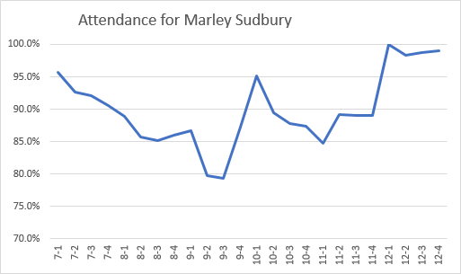
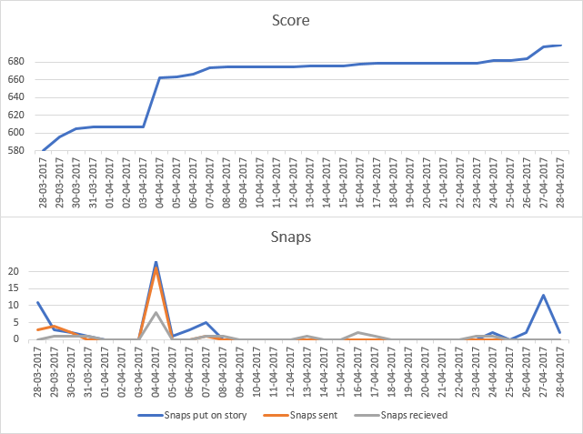
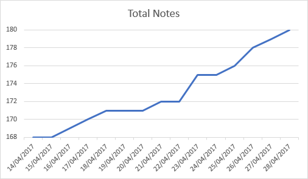

I'll be honest, I enjoy data and statistics. I'm a loyal subscriber to /r/dataisbeautiful on Reddit. Here is a prime example of why this sort of thing is good. I have tracked and graphed many pointless areas of my life, including:
My attendance at secondary school has had its ups and downs, literally. This year (Y12), I received my first report with 100% attendance, although this didn't last. Here I have graphed it.
Each year I receive four reports, usually including my current attendance percentage. Firstly, please note that the first three report 4s (7-4, 8-4 and 9-4) are not figures I have access to, and so are represented by averages of the previous and next values.
The most interesting thing about this data that I have seen is how for the first three years, there seems to be a continuous downward trend, uninterrupted by the summer holidays. The worst (lowest) value is report 3 from year 9, with 79.3%, although as mentioned my attendance would have almost certainly been lower in the next one. The best is 12-1, with 100%. There are all sorts of things one could interpolate from this data, such as I am much more motivated now that I am in the 6th Form, and that I missed approximately 114 lessons in year 10. Of course I passed all my GCSEs so it can't have been that big of a problem.
I also think it's interesting that only my most recent two years show any increase in attendance.
I imagine you are probably familiar with the social networking app Snapchat. If not, it is a service where you can send images and text to other users under the pretence/gimmick that they do not last forever in the way they would if it were a traditional IM service.
Now my score on Snapchat has never been particularly high, preferring as I do SMS or phone-calls (or Facebook Messenger at the least), but rest assured that my score now is substantially higher than it was back in March/April this year when I decided to record it, along side the number of 'snaps' I posted, sent or received.
During the period of 2017-03-28 to 2017-04-28 (32 days) I saw an increase of 119 in my Snapchat score, coming from 68 snaps on my story, 31 snaps sent and 19 received. I have a feeling I may have missed something, because that is only 118 points, maybe I got a friend or something? IDK.
Anyway, if you need someone to be weird at through Snapchat: marleysr.
I use an iPhone, and a MacBook, and stuff, so I find myself using Apple's Notes app to record things that I'm thinking about. In the past, there weren't many notes here, but earlier this year I went on a bit of a note-taking spree, which saw my total count spiralling out upwards. I then decided to record how many I had, though I feel I missed most of the interesting bits.
This set of data has a much more limited scope, running from the 14th to the 28th of April 2017 (14 days). I started this with 168 notes, and ended up with 180, an average of 0.86 new notes per day. The number of occasions where I modified (including creation) a note was 18, an average of 1.29 per day.
Readers concerned by the apparent compulsion I have to make notes should be relieved to hear that I have deleted many of the frivolous ones, and am currently on 165 notes, with only four created in the last week. Content includes jokes I have come up with, as well as pseudo-code for programming issues I have faced.
As a little aside, I just checked the Cloudflare statistics for this website. In the last month, there have been 2,425 requests from 338 unique visitors, using 334.63 MB of bandwidth o_o. Most of my traffic is from the UK, followed by India and then the USA. Maybe I should set up Google Analytics.
Cheers for reading x.